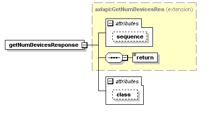

| diagram |  | ||||||||||||||||||
| namespace | http://www.cisco.com/AXL/API/10.5 | ||||||||||||||||||
| type | extension of axlapi:GetNumDevicesRes | ||||||||||||||||||
| properties |
|
||||||||||||||||||
| children | return | ||||||||||||||||||
| attributes |
|
||||||||||||||||||
| source | <xsd:element name="getNumDevicesResponse"> <xsd:complexType> <xsd:complexContent> <xsd:extension base="axlapi:GetNumDevicesRes"> <xsd:attribute name="class" type="axlapi:Name128" use="optional"/> </xsd:extension> </xsd:complexContent> </xsd:complexType> </xsd:element> |
| type | axlapi:Name128 | ||||||
| properties |
|
||||||
| facets |
|
||||||
| source | <xsd:attribute name="class" type="axlapi:Name128" use="optional"/> |